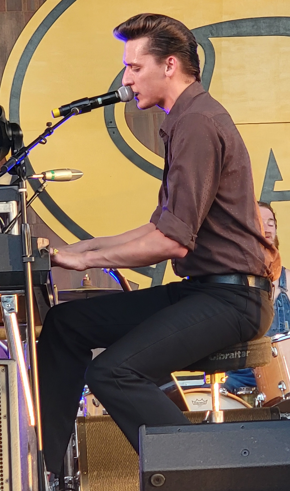
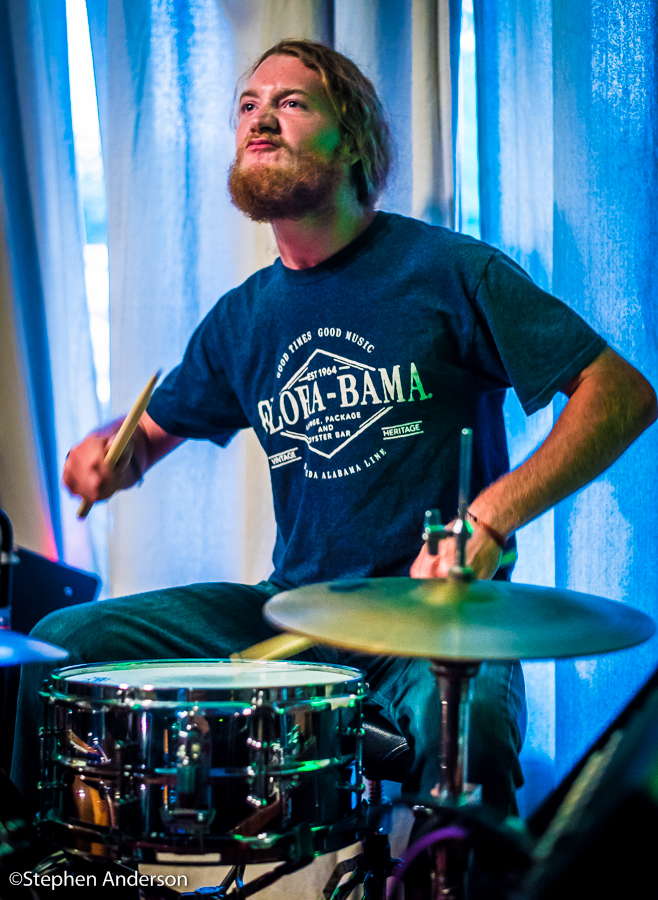

At the heart of our music and the soul of our sound, you'll find the Red Clay Strays -
a group of passionate musicians brought together by the love of storytelling through song. Hailing from the
heart of the South, we channel the rich musical traditions of the region, infusing them with a contemporary
twist that's all our own.
Our songs are a journey through the tapestry of life in the Deep South. We sing
of heartaches, hope, and the simple moments that make life so beautifully complex. With a sound that blends
country, blues, rock, and a touch of soul, we invite you to join us on a sonic adventure that captures the
essence of our southern roots.
The name "Red Clay Strays" is a nod to the rugged spirit of the land and the
people who've called it home for generations. We pay homage to those who've walked these red clay roads before
us, and through our music, we strive to tell their stories and create new ones.
For us, music is not just a
performance; it's a connection. Whether you're dancing to the rhythm, singing along with the lyrics, or simply
getting lost in the melodies, our hope is that you feel a part of the Red Clay Strays family, bound by a shared
love for the South's music and culture.
With each note we play and every lyric we sing, our mission is simple:
to share our passion, our stories, and our love for the South with the world. So, kick off your boots, grab a
sweet tea, and join us on this musical journey through the heart of the Red Clay Strays.
Thank you for being a part of our story.
Sincerely,
The Red Clay Strays
Lead Vocals / Guitar - Brandon Coleman
Vocals / Electric Guitar / Harmonica - Drew Nix
Electric Guitar - Zach Rishel
Bass - Andrew Bishop
Drums - John Hall
